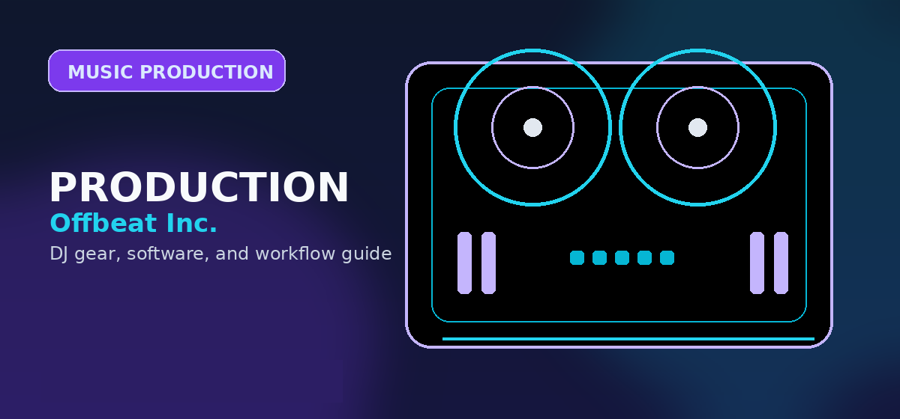

Best DAW for Music Production 2026: Ableton Live vs FL Studio vs Logic Pro
Best DAW for music production 2026: Ableton, FL Studio, Logic vs GarageBand. Honest comparison for beginners and pros with real pricing.

Disclosure: This page uses affiliate links. We may earn a commission at no extra cost to you. Full disclosure →
Choosing the right Digital Audio Workstation (DAW) in 2026 is no longer about which software has the "best" sound—since all professional DAWs produce high-fidelity audio—but about which workflow aligns with your creative brain. Whether you are a bedroom producer crafting lo-fi beats, a cinematic composer scoring for film, or a DJ transitioning into production, your DAW is the cockpit of your studio. The landscape is currently dominated by three titans: Ableton Live, FL Studio, and Logic Pro, with GarageBand serving as the essential gateway for newcomers. Each offers a distinct philosophy on how music should be built, from the clip-based improvisation of Ableton to the pattern-heavy sequencing of FL Studio. This guide analyzes the strengths, pricing, and ideal use cases for each to help you invest in the tool that will actually finish your tracks.
Ableton Live: The Performance Powerhouse
Ableton Live remains the gold standard for producers who blur the line between studio recording and live performance. Its defining feature, Session View, allows you to launch clips and loops non-linearly, making it an unparalleled tool for improvisation and electronic music sketching. In 2026, the Max for Live ecosystem has expanded, giving users access to thousands of community-built instruments and effects that push the boundaries of sound design. While the Arrangement View handles traditional song structures with ease, the real magic happens when you use the Session View to "jam" your way into a composition. It is the ideal choice for EDM producers and live acts who need low-latency stability and a fast, iterative workflow.
FL Studio: The Beatmaker's Dream
FL Studio continues to dominate the hip-hop and trap scenes due to its intuitive step sequencer and pattern-based workflow. Unlike other DAWs that mimic a traditional mixing console, FL Studio feels more like a high-powered instrument. The ability to quickly program drums and melodies into patterns and then paint them into the playlist makes it incredibly fast for beat-making. Perhaps its biggest competitive advantage is the "Lifetime Free Updates" model; once you purchase a license, you never pay for a version upgrade again. For producers who rely heavily on MIDI sequencing and want a software environment that encourages rapid experimentation without a steep learning curve for basic drum programming, FL Studio is unbeatable.
Logic Pro: The Professional Studio Standard
For Mac users, Logic Pro offers the most comprehensive "out-of-the-box" experience in the industry. It provides a massive library of high-quality stock plugins, synthesizers (like Alchemy), and an extensive collection of Apple Loops that would cost thousands of dollars as third-party purchases in other DAWs. Logic excels in traditional recording and mixing, offering a polished, linear workflow that feels like a professional analog studio. In 2026, its integration with macOS ensures extreme stability and efficiency, particularly on Apple Silicon. Because it is sold as a one-time purchase with a very reasonable price point, it provides the highest value-to-feature ratio for those committed to the Apple ecosystem.
GarageBand: The Perfect Entry Point
If you have never opened a DAW before, GarageBand is the smartest place to start. Available for free on all Apple devices, it is essentially a streamlined version of Logic Pro. It strips away the complex routing and advanced mixing tools that often intimidate beginners, focusing instead on a clean interface that encourages immediate creation. The transition from GarageBand to Logic Pro is seamless—you can open your GarageBand projects directly in Logic when you eventually outgrow the free software. For students or hobbyists who want to learn the basics of MIDI, recording, and arrangement without any financial risk, GarageBand provides a professional foundation that removes the barrier to entry.
2026 DAW Comparison Matrix
| DAW | Best For | Key Pro | Key Con | Est. Price (Entry) |
|---|---|---|---|---|
| Ableton Live | Live Performance / EDM | Session View & Max for Live | Steeper learning curve | $99 (Intro) - $749 (Suite) |
| FL Studio | Hip-Hop / Beatmaking | Lifetime Free Updates | Linear recording is clunkier | $99 (Fruity) - $299 (Sig) |
| Logic Pro | All-round Production | Massive stock plugin library | macOS only | $199 (One-time) |
| GarageBand | Absolute Beginners | Completely Free | Limited advanced mixing | Free |
Quick Verdict
- Choose Ableton Live if: You perform live, love improvising with loops, or produce complex electronic music.
- Choose FL Studio if: You are a beatmaker, prefer pattern-based sequencing, and want to pay for your software only once in your life.
- Choose Logic Pro if: You own a Mac, need a complete professional studio suite immediately, and value a traditional recording workflow.
- Choose GarageBand if: You are a total beginner on a budget and want a low-pressure environment to learn the basics.
Investing in a DAW is the most significant decision a producer makes. While the "best" DAW is ultimately the one that doesn't get in the way of your creativity, choosing a tool tailored to your genre and hardware can save you hundreds of hours of frustration. Ready to start producing? Check out our recommended affiliate links below to find the latest discounts and bundle deals for Ableton, FL Studio, and Logic Pro.
Bottom line: For most producers in 2026, FL Studio Producer Edition is the best value -- lifetime free updates, unmatched MIDI piano roll, and the broadest community for beatmaking. Mac users in the Apple ecosystem should consider Logic Pro first. Check FL Studio on Amazon →
Shop on Amazon
Gear up your DAW with hardware — audio interfaces and MIDI controllers on Amazon.
Buyer Checklist Before You Purchase
Before completing your purchase, run through this checklist to confirm you have considered all the relevant factors:
- Check current pricing on Amazon, Sweetwater, and the manufacturer's own site — prices vary and retailer sales can save 10-20%
- Verify compatibility with your existing software and operating system (especially important for audio interfaces and DJ controllers)
- Read the most recent Reddit r/DJs posts for the specific model to catch any reliability or firmware issues not in formal reviews
- Confirm warranty terms — Sweetwater provides a 2-year warranty on most gear at no extra cost, often worth the slight price premium
- Look for bundle deals — some retailers include cables, software licenses, or accessories that add significant value
The products recommended above have been selected based on editorial research and user feedback across multiple communities. Always read the most recent user reviews before purchasing, as product quality and support can change with manufacturing revisions.
Alternatives Worth Considering
The products on this list represent the strongest options in each category, but the market changes regularly. If none of these quite fit your needs, consider exploring:
- One tier up or down from your budget — sometimes a $50 difference puts you in a significantly better product tier
- Open-box and used options — DJ gear depreciates quickly; factory-certified refurbished units from authorised dealers offer significant savings
- Last year's model — manufacturers typically update their entry-level line annually; the previous generation is often available at a deep discount with near-identical performance
Frequently Asked Questions
What is the best DAW for beginners in 2026?
GarageBand (free on Mac/iOS) is the best starting point — zero cost, intuitive interface, and exports to Logic Pro if you upgrade. For Windows, FL Studio Fruity ($99) with its lifetime updates policy offers the best long-term value. Ableton Live Intro ($99) suits producers who want to understand loop-based workflow from day one.
Ableton Live vs FL Studio — which is better for music production?
Neither is objectively better. FL Studio is stronger for beat-making, complex MIDI compositions, and electronic music. Ableton Live is stronger for live performance, loop-based songwriting, and audio warping. Both are used by top producers across all genres. The real question: does the step-sequencer/piano roll workflow (FL) or clip launcher/session view workflow (Ableton) match your brain?
Is Logic Pro worth paying $199.99?
Yes for Mac users. Logic Pro's $199.99 one-time payment includes 2,200+ patches, 70+ effects plugins, a full mastering suite, and Dolby Atmos support. There are no subscriptions, no upgrade fees for major versions. Compared to Pro Tools at $299/year or Ableton Live at $499 (with paid upgrade costs), Logic Pro is extraordinary value on Mac.
Do professional producers use FL Studio?
Yes. Martin Garrix, Metro Boomin, Southside, Wheezy, Murda Beatz, and Imanbek all use or have used FL Studio as their primary DAW. FL Studio is most dominant in hip-hop/trap production and electronic dance music. It's the #1 DAW in hip-hop production by market share per annual producer surveys.
Can I produce professional-quality music with free DAW software?
Yes. GarageBand and Cakewalk by BandLab (free on Windows) have produced commercially released, charted music. The DAW is a tool — the limiting factor for most beginners is knowledge and ear training, not software capability. Use free tools until you're consistently finishing tracks; then upgrade to address specific workflow bottlenecks.